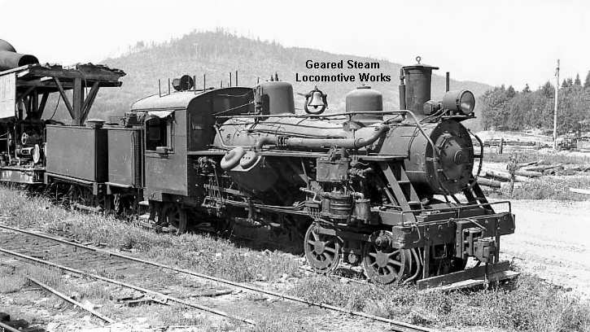

Last updated: 8 September, 2025
In 2015, I visited the Tillamook Air Museum. There were two locomotives on a siding farther down the tracks from the rolling stock 45.420201, -123.802588 located next to the museum. The two locomotives were visible on Google Earth then, but no longer (September 2025.) None of the current rolling stock appear (Google Earth) to be locomotives. I presume the locomotives were moved elsewhere. (Washington?) There are a total of three locomotives listed as "stored" here.
This locomotive needs further research.